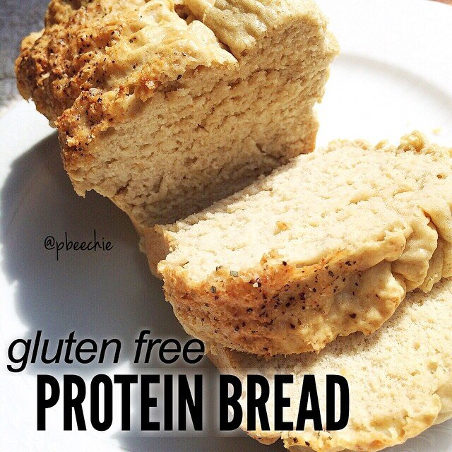

Protein Bread (Gluten Free)

So this happened. Whaaaaat. Gluten free protein bread. I'm slowly trying to make the conversion to gluten free for my health but like. Bread. And stuff. Is tasty. I know there's tons of gluten-free products out there now but why buy it when I can make it. This toasts up so great too gonna be a new fave. Especially because I bought pea protein and have a lot to use up now. Not sure what else to use it for quite yet so I'll keep playing with it. Oh, so the reason I'm trying gluten free is to just cover all my bases. I still have all of the fibromyalgia symptoms pretty bad nearly every day. Doctors have ruled out things (it's not lupus, it's not arthritis, it's not vitamin B deficiency) but they don't know what it is. They just want to diagnose it as fibromyalgia, give me pills (Cymbalta & gabapentin), and move on. But I'm not satisfied with that. SO I'm trying to slowly convert to both gluten and dairy free. It's rough when you're so used to your favorite foods and products. But, I'll get there. I will admit that when I moved in with Jesse, the house slowly began to fill up with more processed sorts of foods, so we are working to slowly eliminate these and get back to the more pure, fresh foods. Really hoping this helps out.
Gluten Free Protein Bread
Makes: 8 slices
-
1 cup (96 g) gluten free old fashioned rolled oats
-
1 cup liquid egg whites
-
1 scoop (30 g) vanilla cellucor protein powder
-
1 scoop (30 g) pea protein powder
-
1/2 tsp baking powder
-
1/4 tsp baking soda
-
salt, pepper, & garlic to taste
Grind your oats into a flour. Then add the remaining ingredients and blend again until smooth. For the spices, I did 1/4 tsp each. You can really use whatever flavors you want here. I want to next try one with italian spices (oregano, etc) and I'd also like to try a cinnamon loaf.
Spray small bread loaf pan with nonstick spray and pour your batter in. Bake at 350 F for 25 mins until firm and fully baked. Remove, let cool, and slice into 8 slices.
1 slice: 94 cals; 1.5 g fat, 8.5 g carbs (1.5 g fiber), and 11 g protein